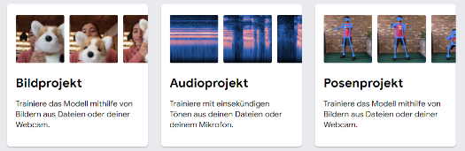
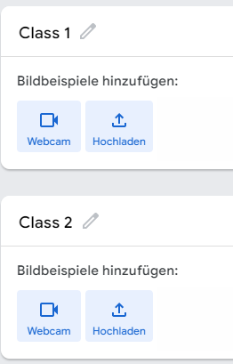
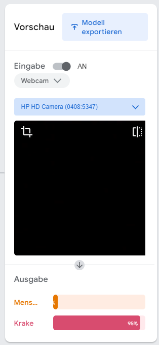

Kurze Einführung in Teachable Maschine
Teachable Maschine von Google ermöglicht es schnell und simpel – mit 3 unterschiedlichen Modelltypen – maschinelles Lernen anzuwenden. Dabei wird kein Konto, Programmierkenntnisse oder Fachwissen vorausgesetzt.Probieren Sie es einfach aus:
- Gehen Sie in einem Browser ihrer Wahl (empfohlen wird ein Laptop oder PC) auf die Webseite: https://teachablemachine.withgoogle.com/train
- Wählen Sie zwischen einem Bildprojekt, Audioprojekt oder Posenprojekt aus. (Hinweis: Das ESP32-CAM Modell unterstütz keine Audioprojekte)
- Wählen sie das Modell mit Standardbildern aus.
- Innerhalb von Class 1 und Class 2 haben Sie die Möglichkeit Trainingsdaten in Form ihrer Projektwahl anzulegen (bspw. haben Sie ein Bildprojekt ausgewählt können Sie Bilder von Aktion A aufnehmen oder direkt per Webcam in Class 1 hochladen, dito für Aktion B in Class 2)
- Wenn Sie genügend Trainingsdaten hochgeladen haben, sollten Sie noch ihre Aktionen umbenennen, klicken Sie dafür auf Class 1 und geben Sie ihren Aktionsname ein (auch hier selbes Prinzip für Class 2)
- Um nun das Modell nun auszutesten, drücken Sie auf Modell trainieren, um das Modell zu trainieren.
- Je nachdem, wie viele Aktionen und Bilder Sie das Modell trainieren lassen kann dies eine Weile dauern (meist ~1-5 min), beachten Sie bitte, dass Sie während dem Trainingsprozess ihr Fenster nicht minimieren oder ein anderes Programm verwenden sollten.
- Wurde das Training erfolgreich beendet sollten Sie nun im Fenster Vorschau die Möglichkeit haben ihr Modell auszuprobieren.
Wenn Sie merken das ihr Modell nicht richtig funktioniert, probieren Sie es mit mehr Trainingsdaten zu füttern, und das Modell nochmal neu trainieren zulassen.
Falls dieses Modell ein Bildprojekt oder Posenprojekt ist und Sie dieses Modell auf dem ESP32-CAM hochladen möchten, schließen Sie vorerst nicht den Tab.